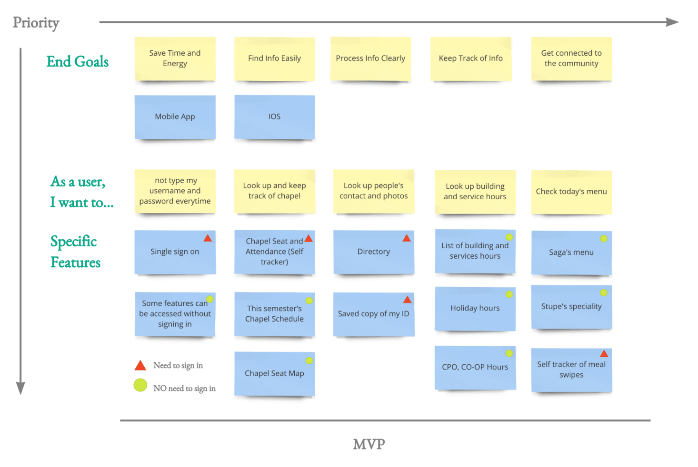
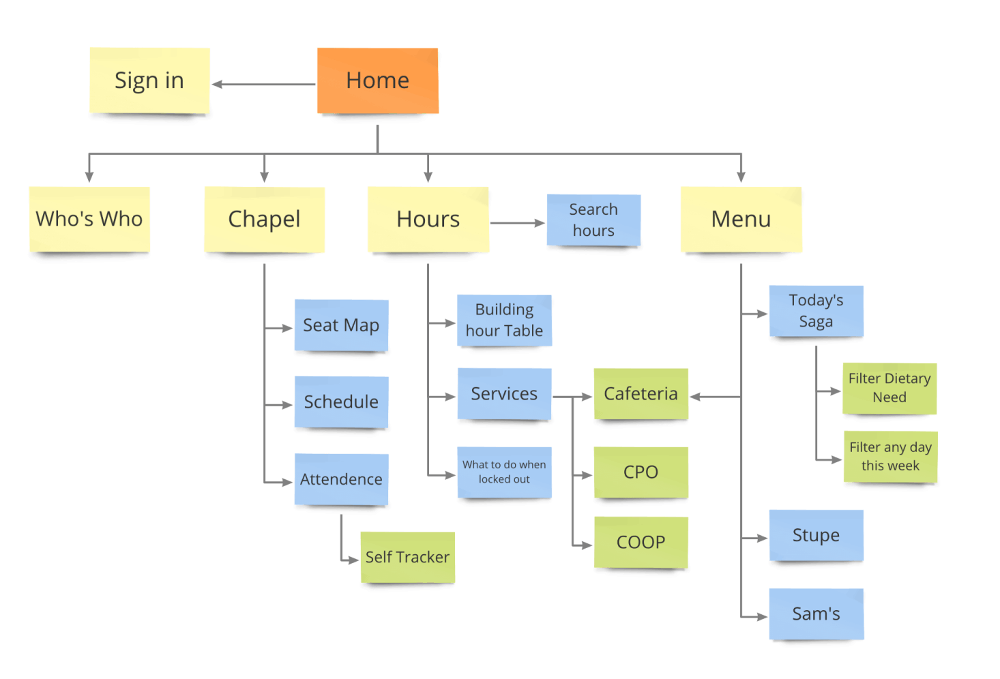
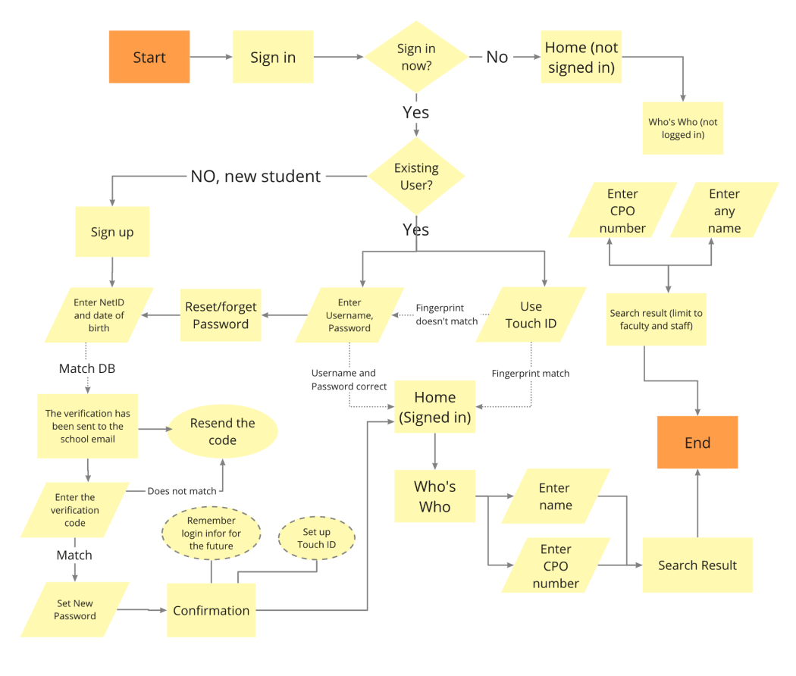
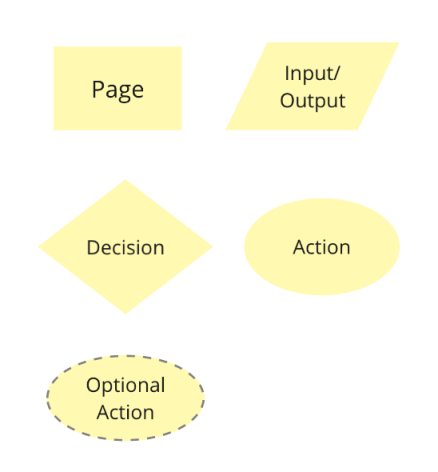
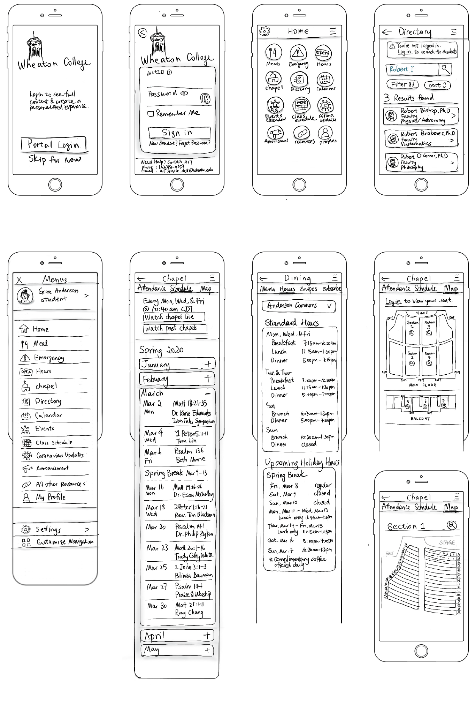
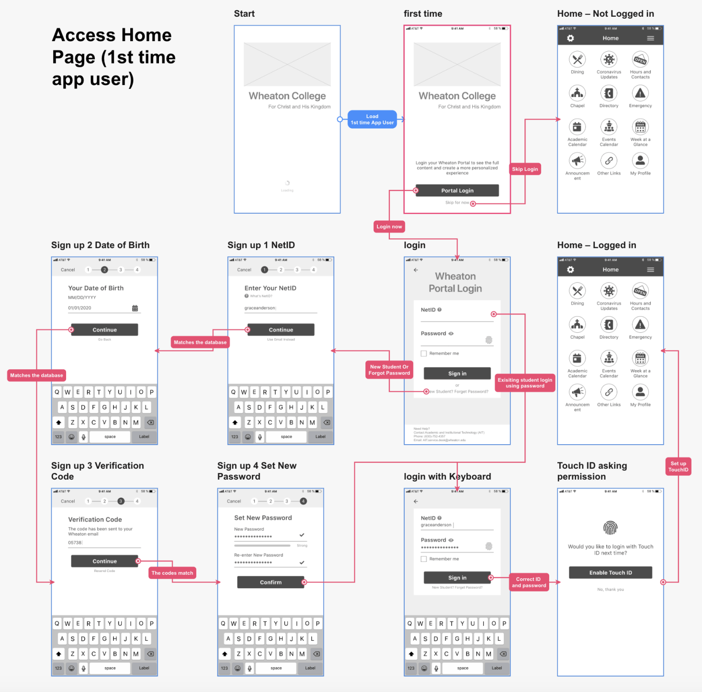
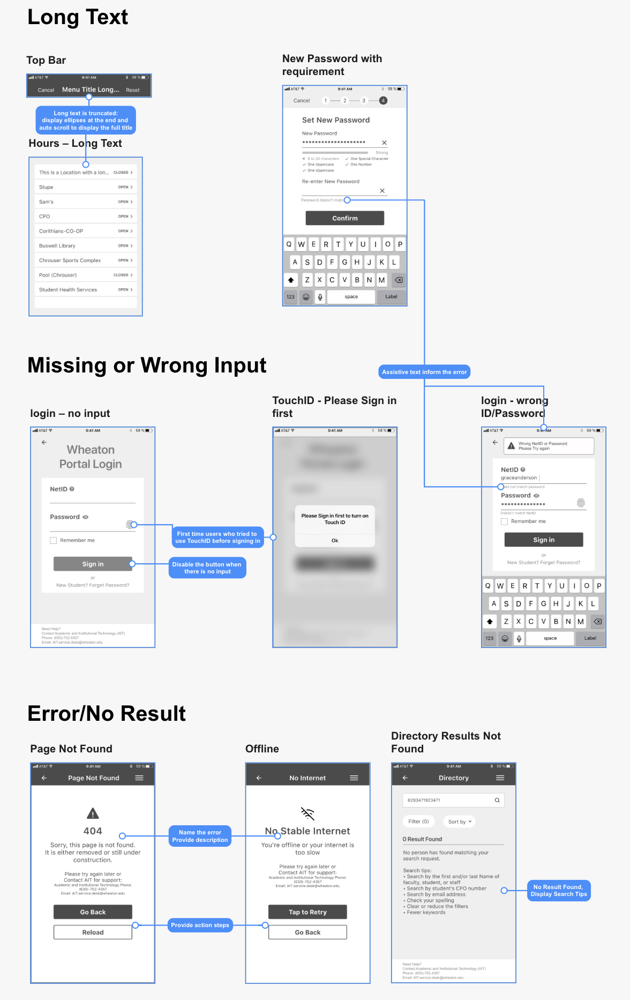

Part One: Research
(1) User Research and Synthesis:
Through Secondary Research, Research Survey, and User Interview, I made Affinity Maps, Emphathy Maps, Personas, and HMW Statements.
>View
An app for college students
My very first UX project
Jan, Feb, June 2020

(1) User Research and Synthesis:
Through Secondary Research, Research Survey, and User Interview, I made Affinity Maps, Emphathy Maps, Personas, and HMW Statements.
>View
(2) Design and Ideate: User Stories, User Flows, and Sitemaps.
(3) Sketch and Wireframe: Red Routes, Guerilla Usability Testing, Wireframes, and Wireflows.
>View
(4) Design System and High Fidelity Mockups with animation.
(5) Prototype and Usability Testing.
>View
These are Information Architecture that I designed to better organize the app before I start designing the screens.
They're all slightly different from the final prototype that I made, but they are very helpful in providing the initial structure for the app.
What's the most essential features? — Minimal Viable Product (MVP)
A Minimum Viable Product (MVP) is a prototype that contains the essential features a user would need to complete the essential tasks but nothing else.
Based on the research result, I identified five features that are crucial to include: single sign-on, chapel seat and attendance, directory, hours, and menu.
I designed the lazy registration pattern: allowing the user to skip the sign-in process to access the app first so that they can save time, and it would also benefit visitors and first-time users since they won't be stuck behind the sign-in process. After seeing what the app offers, then they're more likely to be willing to sign in. Certain features are limited when not logged in for security reasons, such as students' contact info, whereas others do not require a login, such as looking up menu since the cafeteria is open to everyone.

How is the app structured? — Site Map

How do the user complete the essential tasks? — User Flow (Red Routes)
The User Flow detailed the critical paths users will follow when using my app. I made three red routes, one for each critical feature: Directory, Chapel, and Hours. Here is one sample:

User Flow - Directory

Key
Brainstorming the design — Sketches
Based on the user flow, I then made a total of 40 sketches and connected them into a clickable sketch prototype. Here are some examples.
Sketching allowed me to take a faster approach to rapid iteration.
I only designed four of the 12 potential features listed on the home page for this first release of Minimal Viable Product. The reason that I included the rest on the home page was because this layout could benefit the design of the future products, since one of the user's desires is to have a product that combines all the features.
I included some screens that are not in the key red routes, such as the sidebar menu, settings, and profile, because though they are not the shortest route for the users to complete a task, these screens are essential for the functionality of the app, such as easy navigation, log out, and change passwords.

Quickly validate the design — Guerilla Usability Testing
I conducted three short 15-min in-person Usability Tests.
Some of the issues and ways to improve include:
1. The icon and link "Profiles" on the home screen was confused with "Directory." Changing it to "My profile" would easily clear the confusion.
2. Confusion over being able to zoom in the chapel seat map. Adding a hint on the initial screen could help. It is partially because the prototype cannot show the transition from the whole map to the zoomed-in section.
3. New students who need to create a new account cannot easily find the "new student" link on the login page. Making the link more prominent and separated from the primary button could help.
Update the Design — Wireframes and Wireflows
After modifying the sketches, I created the wireframes and wire flows the for red route. Slightly different from the user flow, for the wire flows, I decided to separate "Access Home Page" (logging in) as a different route from the rest so that it's not too repetitive. I also added a route for returning users who could sign in a lot faster than the first time users.
I made a total of over 40 wireframes and 7 wire flows and . Here is one example of the wireflow:

Edge Cases
I thoroughly examined edge cases that a user may encounter to ensure that the user experience remains consistent in every scenario, rather than only when a user interacts with the “ideal” case described by the red routes.
Though there are endless possibilities, and it's impractical to account for every scenario, I designed for several cases that the user is most likely to encounter. Here are some examples.

Product/UX/UIDesigner based in Virginia.
Email: daini.eades@gmail.com